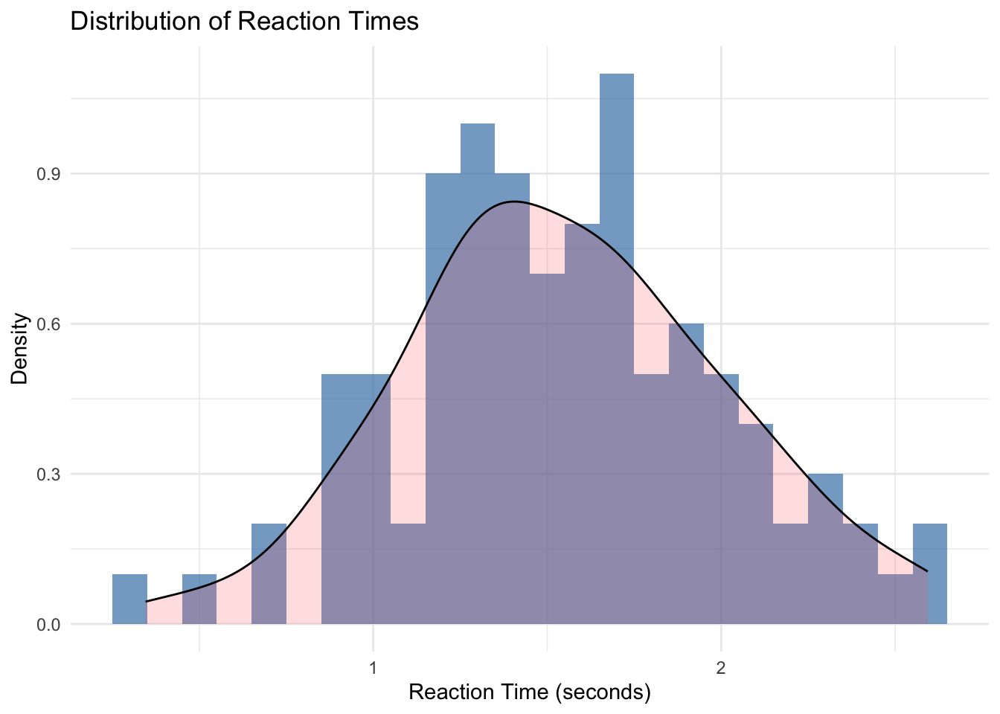

8 Probability and random variables
8.1 Learning objectives
Define probability and understand the principles of how to compute it for both discrete and continuous data.
Define and understand the relationship between populations, samples, random variables, and probability distributions.
Understand the relationship between sample statistics and population parameters.
Understand the definition of Expected Value.
Understand how to compute population mean and population variance.
Understand the definition of an estimate of a population parameter.
Understand the definition of a point estimate and interval estimate of population parameter.
Understand how to use sample statistics to generate point estimates and interval estimates for population mean and population variance parameters.
8.2 Probability definitions
An outcome is a possible result of an experiment.
The sample space of an experiment is the set of all possible outcomes of that experiment.
An event is a set of outcomes of an experiment.
An elementary event is an event which contains only a single outcome in the sample space.
Consider the example of flipping a coin twice:
| 1st flip | 2nd flip | |
|---|---|---|
| outcome 1 | H | H |
| outcome 2 | H | T |
| outcome 3 | T | H |
| outcome 4 | T | T |
The outcomes of the experiment are the rows of the above table.
The set of all rows is the sample space \(\{(H,H),(H,T),(T,H),(TT)\}\).
An example event is \(\{(H,H), (T,T)\}\).
Any individual row in the above table corresponds to an elementary event (e.g., \((H,H)\)). It is distinct from the outcome \((H,H)\) only in that it is wrapped in a set \(\{(H,H)\}\).
Probability is simply the likelihood of an event occurring. If the sample space is discrete, and the likelihood of each outcome is equal, then the probability of an event is simply the proportion of outcomes contained by that event relative all possible outcomes.
A similar definition for probability holds if the space of possible outcomes is continuous, but there are a few interesting and not immediately intuitive little kinks that we will need to deal with. For instance, if the sample space is continuous, then the probability of any any single event is actually zero (more on this in a later lecture).
8.3 Rules of probability
\(0 \leq P(e) \leq 1\) for all events \(e\).
The probability of all outcomes in a sample space must sum to \(1\).
The probability that an event \(e\) does not occur is given by \(P(\neg e)=1-P(e)\).
For some set of events that share no outcomes, \(E=\{e_1,e_2,\ldots,e_n\}\), the probability of all events in \(E\) occurring in a single sample is the sum of the probabilities for each occurring individually:
\[ P(E) = P(e_1 \cup e_2 \ldots \cup e_n) = P(e_1) + P(e_2) + \ldots + P(e_n) \]
Note that the notation \(P(e_1 \cup e_2)\) indicates the probability of the union of \(e_1\) and \(e_2\) and can be read as the the probability of \(e_1\) occurring or event \(e_2\) occurring.
Two events \(e_1\) and \(e_2\) are independent if knowing that one occurs tells you nothing about whether the second will occur. This is given by \(P(e_1{\cap}e_2)=P(e_1)P(e_2)\).
Note that the notation \(P(e_1 \cap e_2)\) indicates the probability of the intersection of \(e_1\) and \(e_2\) and can be read as the the probability of \(e_1\) occurring and event \(e_2\) occurring.
For Example, let \(A\), \(B\), \(C\) share no outcomes and be the possible events of an experiment with the following probabilities of occurrence:
\[ P(A) = 0.4 \\ p(B) = 0.3 \\ P(C) = 0.3 \\ \]
This is a valid set of probabilities because they obey:
\(0 < P < 1\)
\(P(A) + P(B) + P(C) = 1\)
Now suppose that we are told:
\[ P(A \cup B) = 0.6 \\ P(A \cup C) = 0.7 \\ P(B \cup C) = 0.6 \\ \]
This does not obey the rules of probability because we are told that they do not share any outcomes and yet all union probabilities are not equal to the sum of their parts (e.g., \(P(A \cup B) \neq P(A) + P(B)\)).
8.4 Random variables and distributions
A random variable is a data generating process. You can think of it like an infinitely deep bucket full of experiment outcomes. Whenever you perform an experiment, you reach into the bucket, and pull out one outcome at random. All possible experiment outcomes contained by the bucket define the population under study, and the set of probabilities corresponding to each possible outcome is the probability distribution. Probability distributions are in turn defined as functions of one or more population parameters. In particular, if \(X\) is a random variable with probability distribution \(D(\boldsymbol{\theta})\) where the \(\boldsymbol{\theta}\)s are population parameters, then we say
\[X \sim D(\theta_1, \ldots, \theta_n)\]
In words, this reads X is distributed as D with parameters \(\theta_1, \ldots, \theta_n\).
8.5 Sample statistics estimate population parameters
Any outcome you pull out of the bucket is a sample from the random variable. In general, we use sample statistics to estimate population parameters. An estimate of a population parameter is our best guess for what a population parameters true value is. For example, we use the sample mean to estimate the population mean. Estimation of population parameters with sample statistics is a key step we will always need to take when performing inferential statistics.
8.5.1 Population mean for discrete \(X\)
Let \(X\) be a discrete random variable.
Let \(\boldsymbol{x} = \{x_1, \ldots, x_n\}\) be a sample from \(X\).
The central tendency of the sample \(\boldsymbol{x}\) is given by the sample mean \(\bar{\boldsymbol{x}}\): \[ \begin{align} \bar{\boldsymbol{x}} &= \frac{1}{n} \sum_{i=1}^{n} x_{i} \end{align} \]
The true central tendency of \(X\) is given by the population mean which is denoted by \(\mu\) and is defined by an operation called the expected value of \(X\) denoted \(\mathbb{E}\big[X\big]\):
\[ \begin{align} \mathbb{E}\big[\boldsymbol{X}\big] &= \mu \\ &= x_1 p(x_1) + x_2 p(x_2) + \ldots + x_n p(x_n) \\ &= \sum_{i}^{n} x_i p(x_i)\\ \end{align} \]
If we do not know the true value of the population mean \(\mu\) then we can estimate it using the sample mean \(\bar{\boldsymbol{x}}\). \[ \begin{align} \hat{\mu} &= \bar{\boldsymbol{x}} \end{align} \]
This is called a point estimate of \(\mu\), because we are specifying a single number (i.e., a single point) that is our best guess for its true value. Later, we will learn about interval estimates of population parameters, which provide a range of best guess (e.g., we might try to say that we are \(95\%\) percent sure that the true value of some population parameter is between some lower value and some upper value). We will see how to generate interval estimates in a later lecture. For now, it is sufficient to understand their conceptual relationship to point estimates.
8.5.2 Population variance for discrete \(X\)
Similarly, a common measure of the spread of a sample is given by the sample variance \(\boldsymbol{s}^2\):
\[ \begin{align} \boldsymbol{s}^2 &= \frac{1}{n-1} \sum_{i=1}^{n} (x_i - \bar{\boldsymbol{x}})^2 \end{align} \]
The true variance of \(X\) is given by the population variance which is denoted by \(\sigma^2\) and is defined as follows: \[ \begin{align} \mathbb{Var}\big[\boldsymbol{X}\big] &= \sigma^2 \\ &= \mathbb{E}\big[(X - \mu)^2\big] \\ &= \sum(x^2 - 2x\mu + \mu^2) p(x) \\ &= \sum x^2 p(x) - \sum 2 x \mu p(x) + \sum \mu^2 p(x) \\ &= \sum x^2 p(x) - 2 \mu \sum x p(x) + \mu^2 \sum p(x) \\ &= \sum x^2 p(x) - 2 \mu^2 + \mu^2 \\ &= \left(\sum_i x_{i}^2 p(x_{i})\right) - \mu^2 \end{align} \]
If we do not know the true value of the population variance \(\sigma^2\) then we can estimate it using the sample variance \(\bar{\boldsymbol{s}^2}\). \[ \begin{align} \hat{\sigma^2} &= \boldsymbol{s}^2 \\ \end{align} \]
8.5.3 Discrete \(X\) example
As a concrete example, consider the following discrete probability distribution corresponding to the random variable \(X\).

Since we are explicitly given the probability distribution i.e., we are told exactly what the probability of each event is so we can calculate the population mean \(\mu\) as follows:
\[ \begin{align} \mu &= \mathbb{E}\big[\boldsymbol{X}\big] \\ &= \sum_{i}^{n} x_i p(x_i) \\ &= (1 \times 0.1) + (2.0 \times 0.4) + (3.0 \times 0.5) \\ &= 2.4 \end{align} \]
Now suppose that we draw a the following sample of \(n=10\) from this distribution:
## [1] "x:"## [1] 1 3 3 3 3 3 3 3 3 1## [1] "sample mean:"## [1] 2.6The sample mean of this sample is \(\bar{\boldsymbol{x}} =\) 2.6. Note that our sample mean is not equal to the population mean (its just a fluke if it is). In fact, every time we run this experiment, we will likely get a different sample mean. Lets run it 5 more times and check each one.
## [1] "x:"
## [1] 1 3 2 2 3 3 2 3 1 3
## [1] "sample mean:"
## [1] 2.3
## [1] "x:"
## [1] 2 3 2 3 3 3 2 2 3 3
## [1] "sample mean:"
## [1] 2.6
## [1] "x:"
## [1] 2 2 3 1 3 3 3 3 2 1
## [1] "sample mean:"
## [1] 2.3
## [1] "x:"
## [1] 3 3 1 3 2 2 3 3 3 3
## [1] "sample mean:"
## [1] 2.6
## [1] "x:"
## [1] 3 2 1 2 1 3 3 3 1 3
## [1] "sample mean:"
## [1] 2.28.5.4 Population mean and variance for continuous \(X\)
Let \(X\) be a continuous random variable.
Let \(\boldsymbol{x} = \{x_1, \ldots, x_n\}\) be a sample from \(X\).
Sample statistics are computed in exacrtly the same way regardless of whether \(X\) is continuous or discrete.
Population parameters are again computed in terms of the expected value operator, but the way this operator works is a bit different depending on whether \(X\) is continuous or discrete.
In particular, if \(X\) is continuous, then we will replace discrete sums (i.e., \(\sum x\)) with continuous integrals (i.e., \(\int x dx\)).
8.5.4.1 Continuous \(X\) mean
\[ \begin{align} \bar{\boldsymbol{x}} &= \frac{1}{n} \sum_{i=1}^{n} x_{i} \\ \mathbb{E}\big[\boldsymbol{X}\big] &= \mu \\ &= \int x f(x) dx \\ \\ \hat{\mu} &= \bar{\boldsymbol{x}} \end{align} \]
8.5.4.2 Continuous \(X\) variance
\[ \begin{align} \boldsymbol{s}^2 &= \frac{1}{n-1} \sum_{i=1}^{n} (x_i - \bar{\boldsymbol{x}})^2 \\ \mathbb{Var}\big[\boldsymbol{X}\big] &= \sigma^2 \\ &= \mathbb{E}\big[(X - \mu)^2\big] \\ &= \int(x^2 - 2x\mu + \mu^2) f(x) dx \\ &= \int x^2 f(x) dx - \int 2 x \mu f(x) dx + \int \mu^2 f(x) dx \\ &= \int x^2 f(x) dx - 2 \mu \int x f(x) dx + \mu^2 \int f(x) dx \\ &= \int x^2 f(x) dx - 2 \mu^2 + \mu^2 \\ &= \left(\int x^2 fx \right) - \mu^2 \\ \hat{\sigma^2} &= \boldsymbol{s}^2 \\ \end{align} \]
8.5.5 Continuous \(X\) example
As a concrete example, consider the following continuous probability distribution corresponding to the random variable \(X\).

As for our discrete \(X\) example, we are explicitly given the probability distribution i.e., we are told exactly what the probability density of each event is so we can calculate the population mean \(\mu\) as follows:
\[ \begin{align} \mu &= E(\boldsymbol{X}) \\ &= \int x p(x) dx \\ &= 0 \\ \end{align} \]
Now suppose that we draw a the following sample of \(n=10\) from this distribution:
## [1] "x:"## [1] -0.4634365 -0.5860384 -1.1034846 -0.7052956 -2.0172964 2.4191359
## [7] 0.4799264 0.7697063 -0.2417083 0.5441947## [1] "sample mean:"## [1] -0.09042964The sample mean of this sample is \(\bar{\boldsymbol{x}} =\) -0.0904296. As for our discrete \(X\) exmaple, we see that our sample mean is not equal to the population mean. Lets run it 5 more times to demonstrate again that the sample mean is indeed a ranomd variable.
## [1] "x:"
## [1] 0.06675383 -1.07453642 -0.02766197 0.80187038 1.19346301 -1.61915346
## [7] -0.55623809 -0.27635984 -0.44224162 -0.92570219
## [1] "sample mean:"
## [1] -0.2859806
## [1] "x:"
## [1] -1.4059973 1.1747777 -0.3693158 -0.3889989 -0.3981842 1.1262742
## [7] -0.5784925 -0.5532531 1.1078557 1.6875883
## [1] "sample mean:"
## [1] 0.1402254
## [1] "x:"
## [1] -0.04175164 0.68277449 1.87922649 1.60630429 -1.12804454 -0.35348833
## [7] -0.58888203 -1.40628994 -0.33949538 0.88952977
## [1] "sample mean:"
## [1] 0.1199883
## [1] "x:"
## [1] -0.7010838 -0.4948613 -0.1379956 0.1617146 -1.9310552 -1.0802751
## [7] 0.1649310 0.6557283 0.7874470 -0.5375098
## [1] "sample mean:"
## [1] -0.311296
## [1] "x:"
## [1] -1.20075146 -0.23642756 0.31603862 -1.85759774 -0.62868629 -0.38751706
## [7] 0.03936586 -0.03239311 0.99807742 0.60014738
## [1] "sample mean:"
## [1] -0.2389744